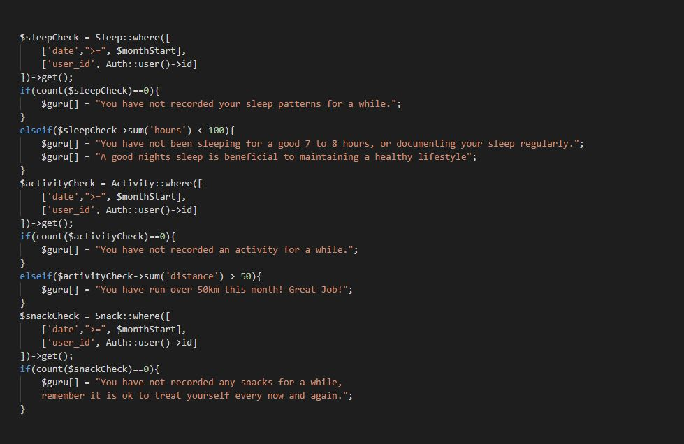
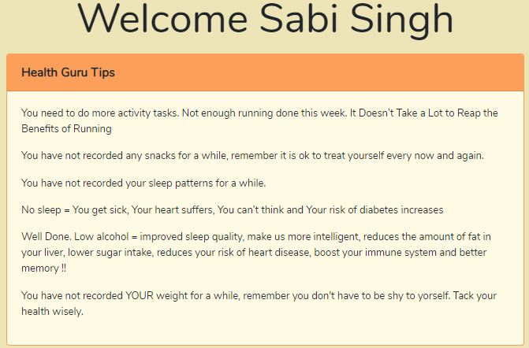
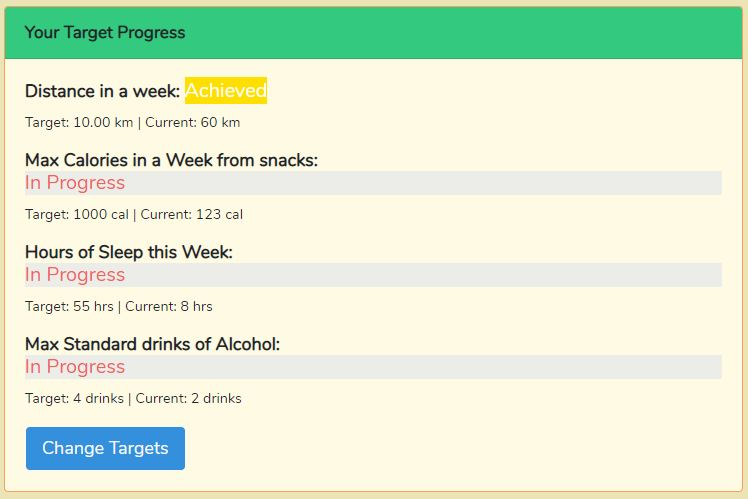
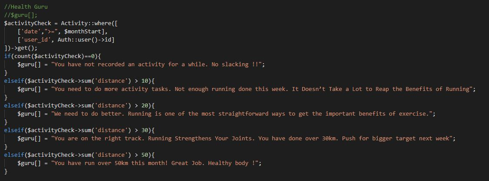
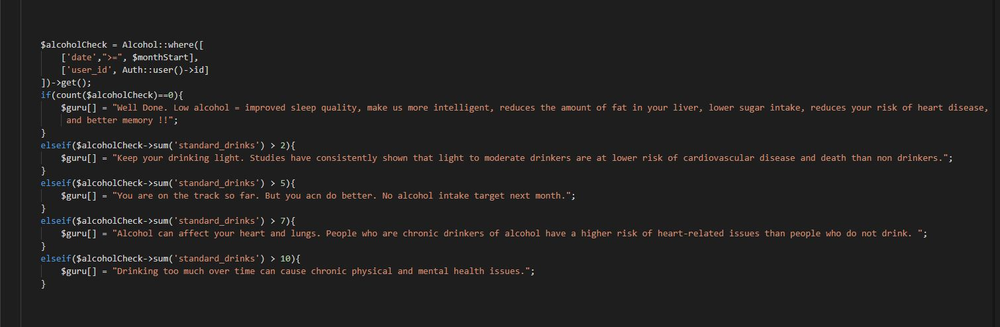
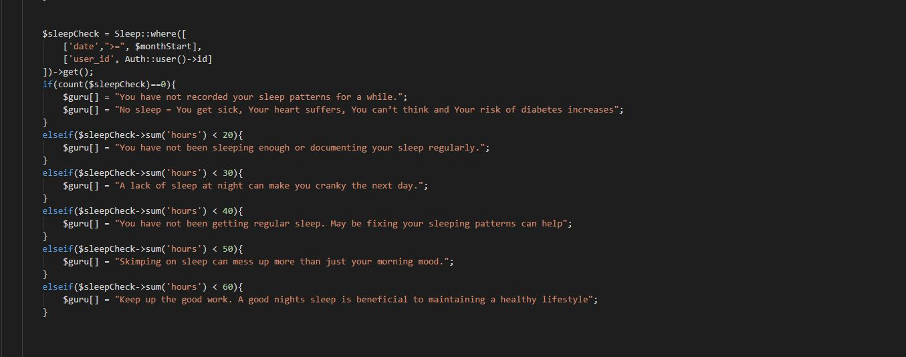
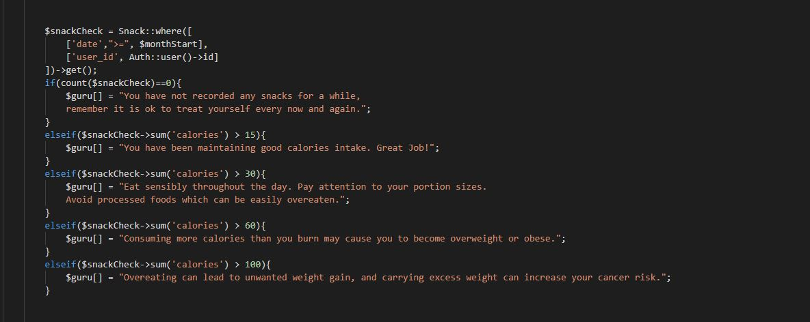
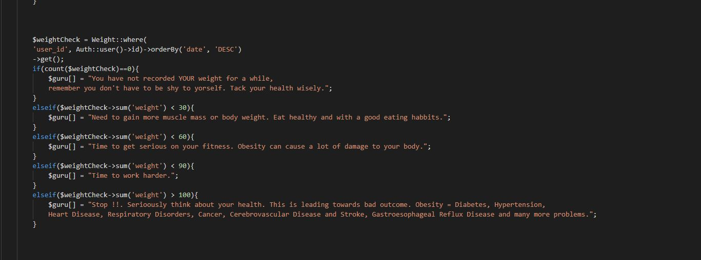

Sprint 5
Professional Achievment
This sprint our client asked us to work on the Friend/list and also I took an extra task of working on the health guru tips. This sprint wasn't the best of sprint, but I managed to finish my task I took as an individual of health guru tips. So far I have not missed a single scrum, group and client meetings. I think it's worth mentioning as an professional achievement. My client was very happy with the new tips from the health guru.
Technical Achievment
This sprint was different compare to other sprints. I had two tasks this sprint. As mentioned, I took health guru tips tasks and also as a team, we all decided to work on the Friends separately and see if one of us can come up with the final working feature. I am going to talk a little about the health guru tips which I managed to complete and then the friends feature which I tried my very best but couldn't get it working. The user's home page shows health guru tips. Basically, it keeps the user active by giving them tips on what they have been or not doing.
While working on friends list branch I added profile_table in migration, made the profile model, edited registered controller and added user function in user.php. By doing that I was able to create a user profile. The I created relationships between the users and profile. I was able to create users with correct id and then managed to get the user id and profile id match in the phpmyadmin DB. I worked through controllers, migration, resources, views and routes but somewhere I started getting errors. I tried to get them fixed with online help with the errors I was getting but it didn't help. I tried a few times with different approach using different ways following online help from Laravel 5.2 PHP Build a social network,
Building a Social Network and Social Media Website using Laravel 5.4 but none of them worked. Here is the link to github page for the work I did for this feature. Too much to explain here and for the images.
Half way through the sprint I thought I will manage to get this feature working but it didn't. I even tried to reach other teams for help with this feature, but as they all were busy with their project couldn't help much as this feature is very time consuming I managed to make the migrations of user profiles and also manage to make user profile, but in the end it started playing up and started getting a lot of errors. May be at that stage I should have asked help from the lecturers and could manage to get the friends feature working.
Also in this sprint we had a lecture on the unit testing and we had to implement a unit test. It was to test on a particular feature to see if it is working correctly. I completed the unit test as it was made a checkpoint.


 
 
 


Personal Reflection
What did I do well?
Getting a well done approval from client after showing the health guru tips were really good. As the agile 1st principle "Our highest priority is to satisfy the customer through early and continuous delivery of valuable software." I felt I achieved the Principle as my client was very satisfied and impressed. In the real world this will make a big impact on the users using this app as for a user would like to see more health tips from the guru so that it will motivate them to do more. Also completing the unit test which was required by the lecturers was quite satisfying.
What could I have done better?
Even though the workload this sprint was higher than some old sprints, but in the end it wasn't a successful as a team as none of us manage to work on the friends feature. Even though I managed to contribute towards the project by doing guru tips, but I feel I could have done better with friends feature.
What lessons did I learn?
For me this sprint was a lesson to learn as I manage to complete one task, but couldn't get the friends feature works even though I tried my very best. I have learnt that its not always possible that a developer(myself) will achieve the goals, but to learn the fact that I have given my best shot. I have learnt how to stay positive even after a small failure. It was a great motivation when Grayson told me that he was impressed with the tips and we as a team learn from this and try differently next time.
What barriers did I encounter?
The biggest barrier I encountered in this sprint was that there is not much online help and whatever there was was actually 5-10 year old and since then the IT has moved wonders and the information was not helpful. This sprint I had other assignments due so time management was also a barrier for me as I spend a lot of time to get the friends feature working. I should have Managed my time better towards other assignments as well.